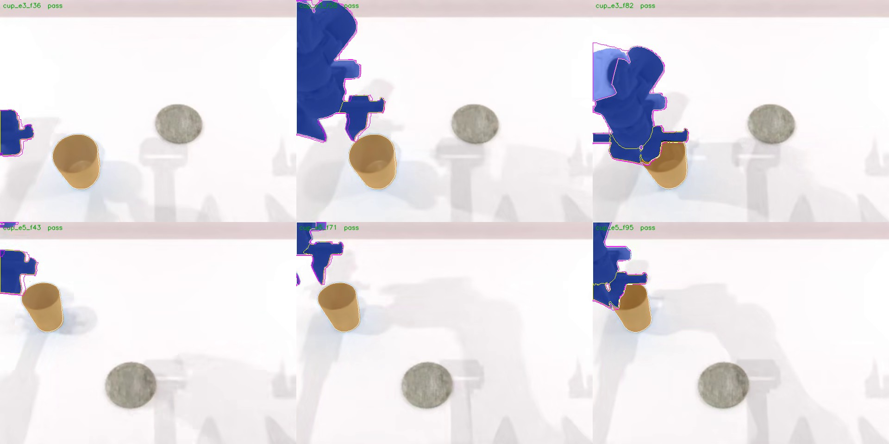
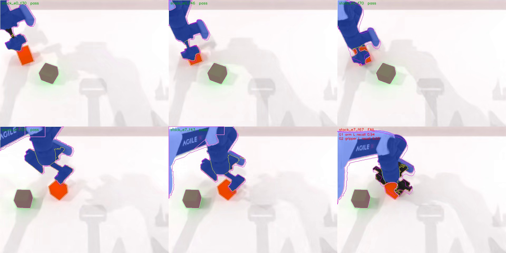
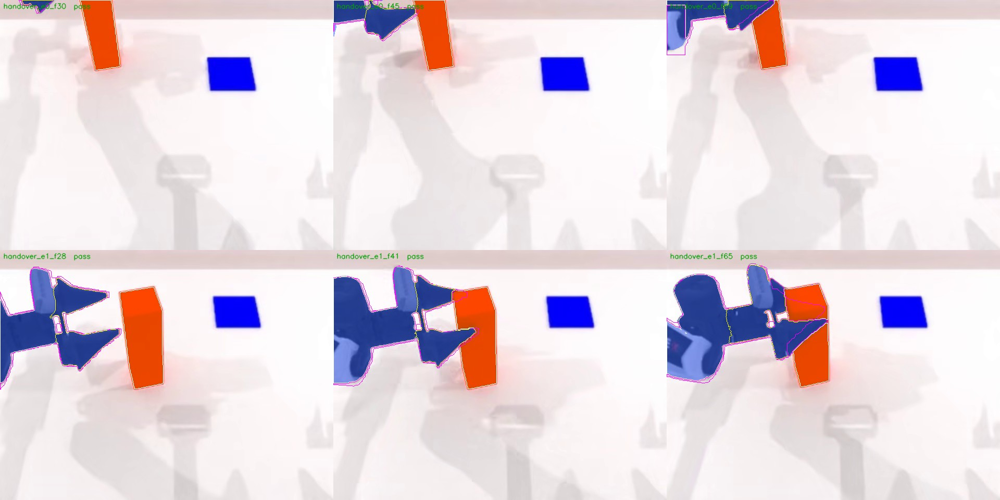
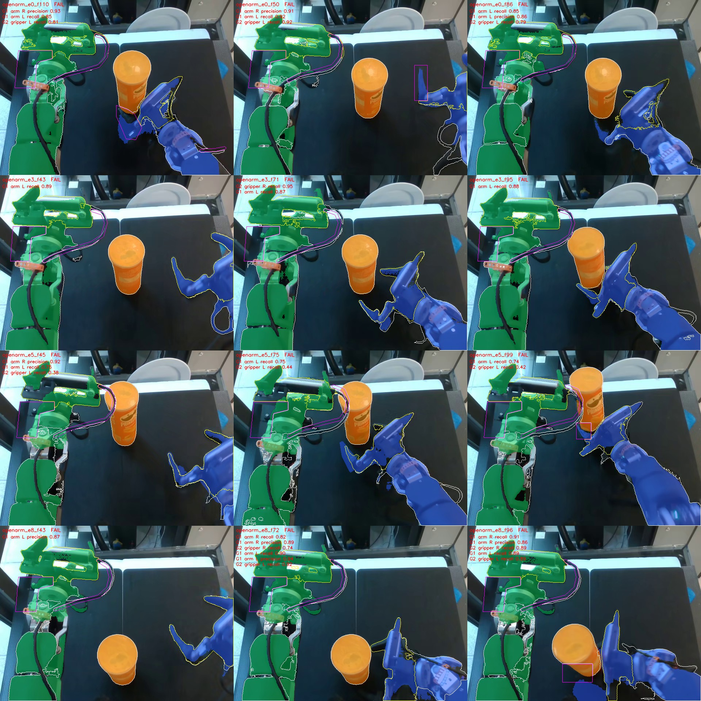
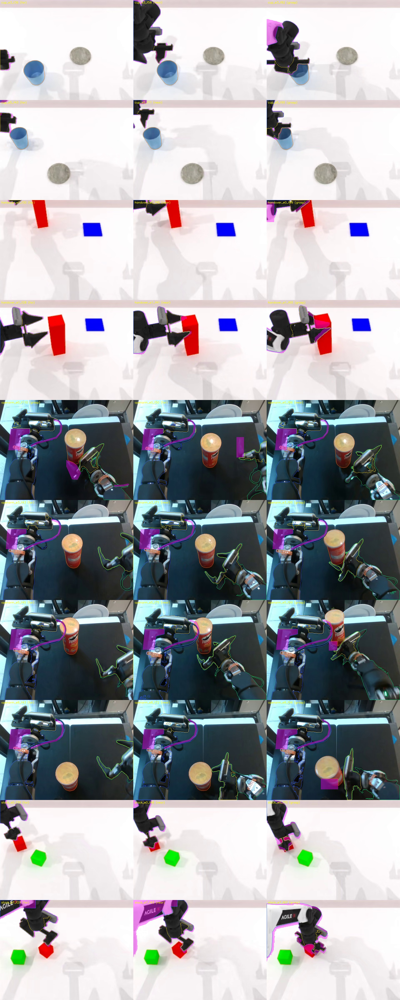
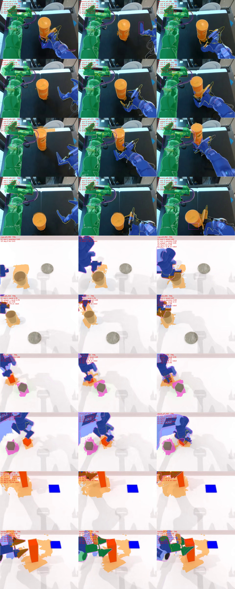
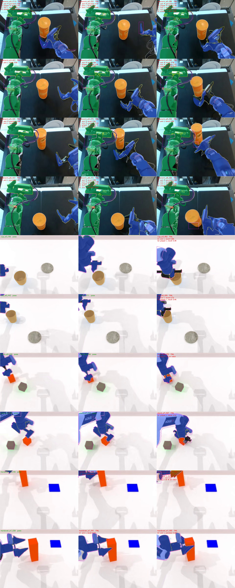
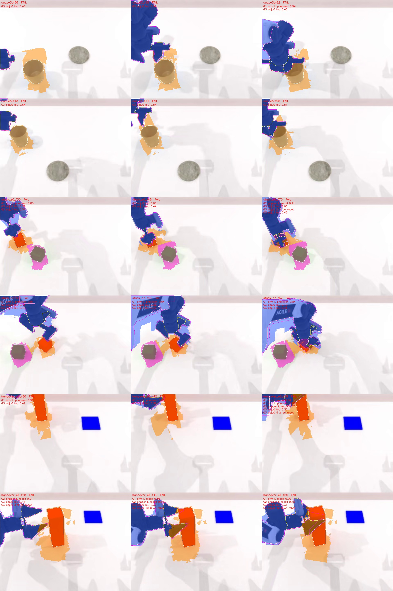
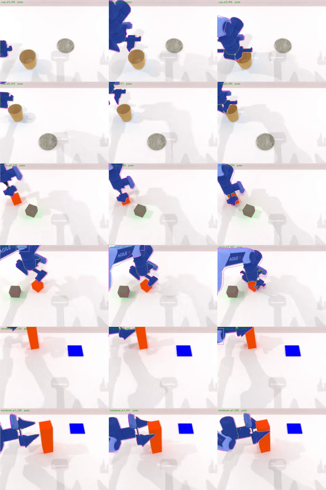
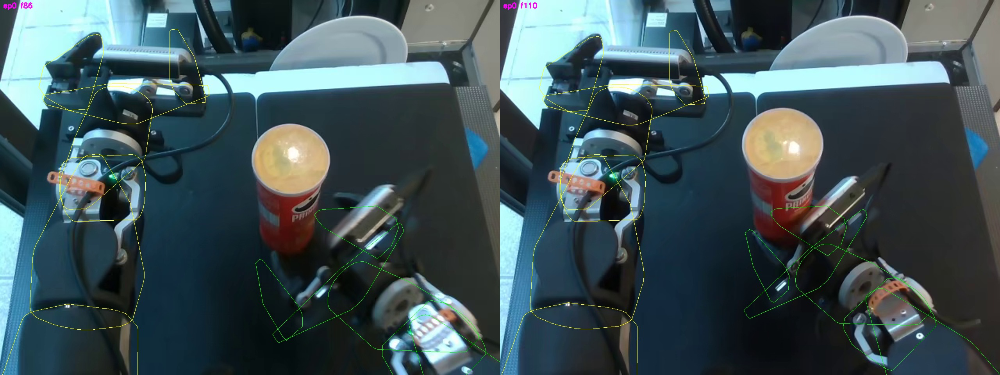

Status: RoboTwin 17/18 gold frames with the pipeline's own camera; OpenArm 0/12. Not done. Full text and limits: R06_segmentation.md. Protocol: PROTOCOL.md.
| Condition | Gold frames passing |
|---|---|
| Baseline v1, fitted camera | 0 / 30 |
| R05 rules, fitted camera | 0 / 30 |
| R06 rules, fitted camera | 10 / 30 (RoboTwin 10 / 18, OpenArm 0 / 12) |
| R05 rules, true camera (RoboTwin) | 0 / 18 |
| R06 rules, true camera (RoboTwin) | 18 / 18 |
Camera error vs truth: cup 25.8 → 3.7 px, stack 15.8 → 3.0 px, hand-over 35–41 → 3.6 px. Gold frames passing with the pipeline's own camera: cup 6/6, stack 5/6, hand-over 6/6, OpenArm 0/12. Pose transfer vs baseline: cup +1.4 dB, stack +1.7 dB.




White / green-blue outline = arm, yellow = gripper, orange = object, magenta = not scored (I could not assign these pixels).

Filled = pipeline masks (arms blue / green, objects orange / pink). Lines = gold. Red text = failed checks.




